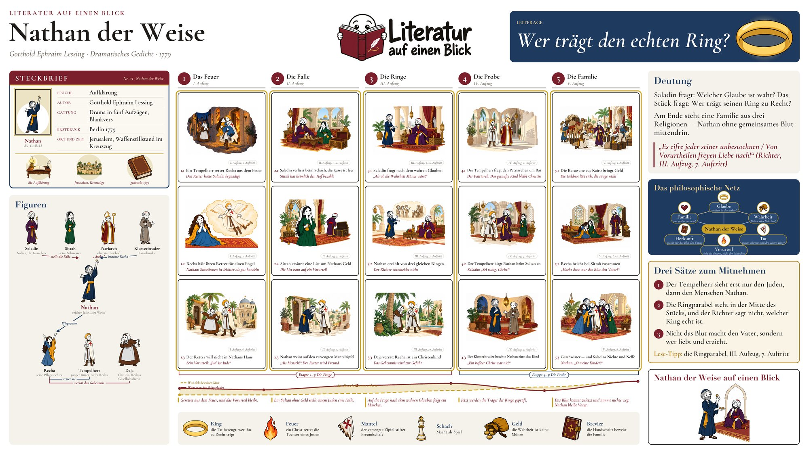

Literatur auf einen Blick · Folge 05
Nathan der Weise
Gotthold Ephraim Lessing · Dramatisches Gedicht · 1779
LeitfrageWer trägt den echten Ring?
Ein Sultan fragt einen reichen Juden: Welche Religion ist die richtige? Nathan antwortet mit einem Ring, den es dreimal gibt. Wer trägt den echten Ring?
Das Lernplakat
Alles, was im Video entsteht, auf einem Blatt: die fünf Etappen der Handlung, die Figuren und ihre Beziehungen, die Symbole, die Deutung und drei Sätze für die Klausur.
Plakat herunterladen PNG · 9600 × 5400 px · 14.2 MB · für den Druck bis DIN A1 Kleinere Fassung JPG · 4800 × 2700 px · für Bildschirm und Tablet


Zum Lernen und für den Unterricht. Bitte unverändert weitergeben und den Kanal nennen.

Drei Sätze für die Klausur
- Der Tempelherr sieht erst nur den Juden, dann den Menschen Nathan.
- Die Ringparabel steht in der Mitte des Stücks, und der Richter sagt nicht, welcher Ring echt ist.
- Nicht das Blut macht den Vater, sondern wer liebt und erzieht.
Deutung
Saladin fragt: Welcher Glaube ist wahr? Das Stück fragt: Wer trägt seinen Ring zu Recht?
Am Ende steht eine Familie aus drei Religionen — Nathan ohne gemeinsames Blut mittendrin.
„Es eifre jeder seiner unbestochnen / Von Vorurtheilen freyen Liebe nach!“ (Richter, III. Aufzug, 7. Auftritt)
Die Handlung in fünf Etappen
- Das Feuer I. Aufzug
- Die Falle II. Aufzug
- Die Ringe III. Aufzug
- Die Probe IV. Aufzug
- Die Familie V. Aufzug
Figuren
- Nathan reicher Jude, „der Weise“
- Recha seine Pflegetochter
- Daja Christin, Rechas Gesellschafterin
- Tempelherr junger Ritter, rettet Recha
- Saladin Sultan, die Kasse leer
- Sittah seine Schwester
- Patriarch oberster Bischof
- Klosterbruder Laienbruder
Symbole
- Ring die Tat bezeugt, wer ihn zu Recht trägt
- Feuer ein Christ rettet die Tochter eines Juden
- Mantel der versengte Zipfel stiftet Freundschaft
- Schach Macht als Spiel
- Geld die Wahrheit ist keine Münze
- Brevier die Handschrift beweist die Familie
Steckbrief
- Epoche
- Aufklärung
- Autor
- Gotthold Ephraim Lessing
- Gattung
- Drama in fünf Aufzügen, Blankvers
- Erstdruck
- Berlin 1779
- Ort und Zeit
- Jerusalem, Waffenstillstand im Kreuzzug
Kapitel im Video
- 0:00 Einstieg
- 0:33 Steckbrief
- 0:51 Der Bauplan
- 1:15 Etappe 1: Das Feuer
- 2:05 Etappe 2: Die Falle
- 2:54 Etappe 3: Die Ringe
- 4:27 Etappe 4: Die Probe
- 5:58 Etappe 5: Die Familie
- 7:08 Die Figuren
- 7:27 Symbole
- 7:47 Deutung
- 8:17 Das philosophische Netz
- 8:36 Drei Sätze zum Mitnehmen
- 8:54 Das ganze Poster
Grundlage ist der Erstdruck von 1779 (Deutsches Textarchiv). Die Absatzangaben im Material beziehen sich darauf; Schulausgaben zählen Verse und Auftritte teils anders.
Die Videos zum Werk
Das Hauptvideo ist der Stamm. Die Äste führen tiefer ins Werk: einzelne Stellen am Text, die Figuren, die Deutung und die Klausur. Was noch fehlt, ist in Arbeit und erscheint im Kanal.
Szene unter der Lupe
ein Auftritt, eine Stelle, ganz nah am Text
- S1 Der Ring Die Parabel Unter der Lupe geplant
- S2 Der Patriarch Wer Recht haben will Unter der Lupe geplant
- S3 Wessen Kind? Der Schluss Unter der Lupe geplant
Figur im Fokus
wer sie sind und was der Autor an ihnen zeigt
- F1 Nathan weise oder klug? geplant
- F2 Der Tempelherr vom Vorurteil zum Bruder geplant
Verstehen
der Bauplan, die Symbole, die Philosophie dahinter
- V1 Aufklärung im Stück geplant
- V2 Wer weiß wann was? geplant
Klausur
was in der Prüfung gefragt wird und wie du es schreibst
- K1 Szenenanalyse Drama geplant